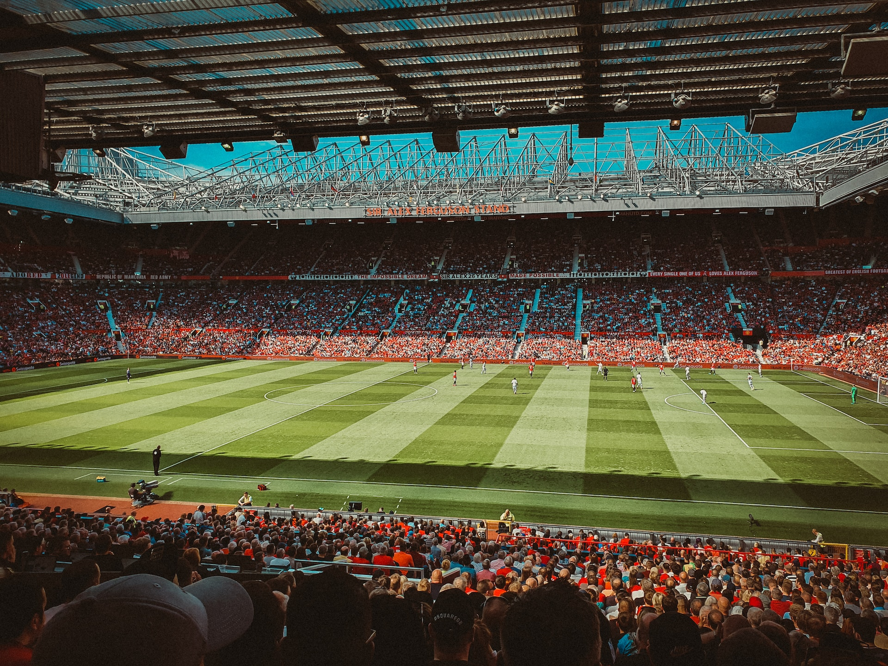

Manchester United
MazahirManchester United, established in 1878 and based at the iconic Old Trafford stadium, stands as one of football's most storied institutions. With a rich history encompassing numerous Premier League titles, FA Cup victories,and European conquests, the club has left an indelible mark on the sport. Manchester United's legacy is intertwined with legendary figures, both on the pitch and in the dugout, and its passionate global fanbase remains unwavering. The club's journey, marked by triumphs, tragedies, and historic moments, continues to captivate football enthusiasts around the world, making Manchester United an enduring symbol of the beautiful game.
glory glory man united!!!
Throughout its history, Manchester United has been synonymous with attacking football and has produced footballing icons like George Best, Bobby Charlton, Eric Cantona, Ryan Giggs, Paul Scholes, and Cristiano Ronaldo. From the Munich air disaster in 1958 to the remarkable treble-winning season in 1999, the club's narrative is one of triumph over adversity and unforgettable achievements. Its global reach extends far beyond the borders of England, as "Red Devils" supporters span continents, showcasing the club's universal appeal.